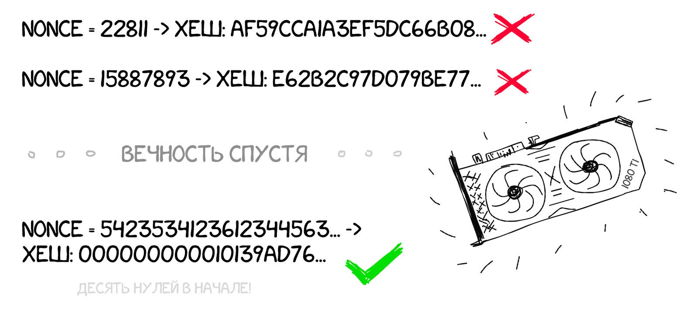

 Майнинг биткоина — не какое-то там священное таинство. Майнинг не связан с поиском новых биткоинов где-то в глубинах интернета. Майнинг — это когда тысячи компьютеров по всему миру гудят по подвалам, перебирая миллионы чисел в секунду, пытаясь подобрать хеш, начинающийся на 10 нулей. Им даже не обязательно для этого находиться в сети.
Почему именно на 10 нулей? А просто так, в этом нет никакого смысла. Так придумал Сатоши. Потому что это одна из тех задач, на которую точно всегда есть решение, но оно точно не может быть найдено быстрее, чем долгим монотонным перебором вариантов.
Сложность майнинга напрямую зависит от размера сети, то есть её суммарной мощности. Если вы создадите свой блокчейн и запустите его себя дома на двух ноутбуках, то задача должна быть попроще. Например чтобы хеш начинался только с одного нуля, или чтобы сумма четных разрядов была равна сумме нечетных.
Чтобы найти начинающийся на 10 нулей хеш, у одного компьютера уйдет несколько десятков лет. Но если объединить тысячи компьютеров в единую сеть и искать параллельно, то по теории вероятностей эта задача решается в среднем за 10 минут. Это и есть время появления нового блока в блокчейне биткоина. Каждые 8-12 минут кто-то на земле находит такой хеш и получает привилегию анонсировать свою находку на всех, избежав тем самым проблемы кто был первым.